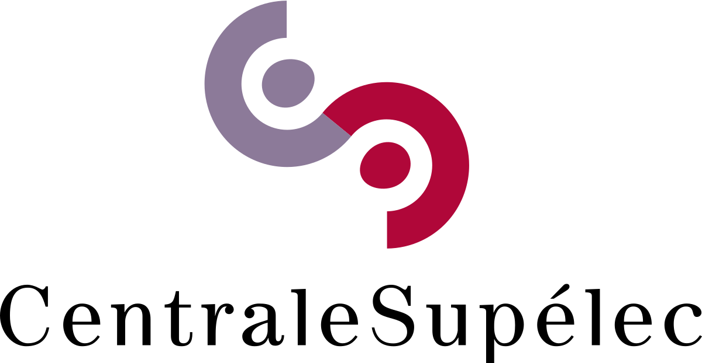

plus grand campus de startups au monde à Paris
Rejoignez un campus et une communauté uniques au cœur de Paris,
avec 1 000 startups, plus de 30 programmes et une gamme
complète de services

Donner du pouvoir à la prochaine génération d’entrepreneurs
Dotée de ressources sur le campus et en ligne - y compris une vaste communauté d'investisseurs, plus de 150 avantages et offres, 35 services publics, plus de 600 événements et ateliers par an - STATION F offre tout ce dont les entrepreneurs ont besoin pour lancer et développer leur entreprise.
Trouver mon programme-

-

- 
-

-

Landing zone
La Landing Zone de Station F n’est pas un programme en soi. Elle permet aux startups de rejoindre Station F et d’avoir accès à un espace de travail en attendant de rejoindre l’un des 30+ programmes du campus. La zone permet d’avoir accès à l’ensemble des espaces de Station F, à la communauté et à une partie des ressources du campus. La sélection est aussi rigoureuse que pour les programmes internes de Station F.
Découvrir